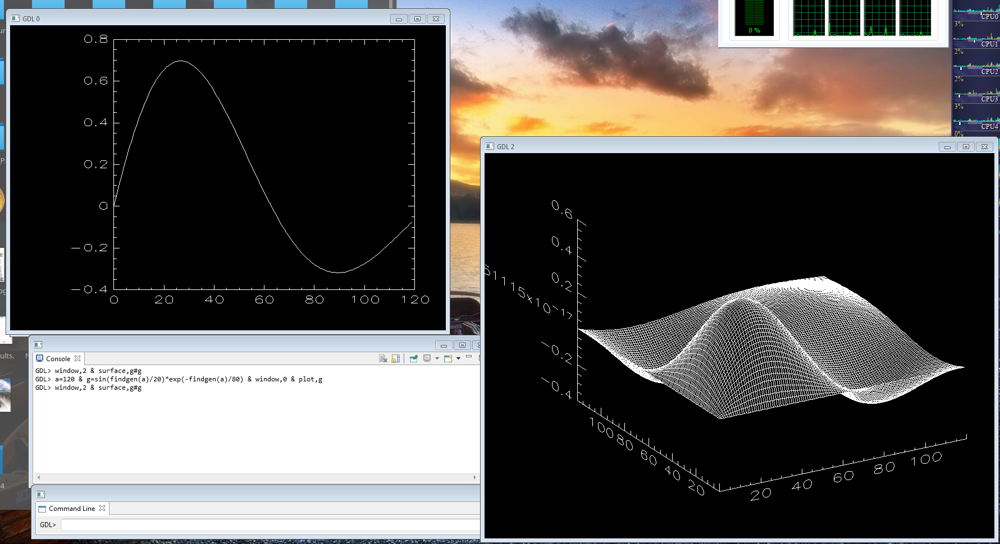

Screenshots¶

GDL rendering the Mandelbrot set. Screenshot generated using the APPLEMAN procedure (included in GDL distribution, file: src/pro/appleman.pro) |

GDL compressing weather-radar images using truncated wavelet approximation. |

GDL used as a part of a web-interface for controlling 2D fluid flow simulation and visualizing the output (reading netCDF files and outputting SVG plots). |

GDL plotting data from a HDF file with MODIS satellite image. |

GDL used for demonstrating Kalman filtering. |

GDL-generated PostScript plot of a Fourier spectrum in a LaTeX-generated PDF file. |

GDL plotting weather-forecast map from a GRIB file with NOAA GFS model output. |

GDL plotting Daubechies wavelet to an SVG file under OpenSolaris. |

GDL writing a surface plot to a PNG file under Cygwin on Windows (by Mateusz Turcza). |

GDL rendering the Mandelbrot set in an X window under coLinux on Windows (by Merrick Berg). |

GDL rendering two HST images of Polar Aurorae on Saturn in UV taken with STIS camera (by Palier and Prange, 1999) (FITS files read with Astron Lib) on Mandriva Linux 2009. |

GDL used for analyzing LIDAR data (reading them from netCDF files, producing PostScript plots) on Linux, using the IDLWAVE mode for Emacs. (by Michał Piądłowski) |

Calling GDL from Python and vice versa (using Numpy and matplotlib). |

GDL rendering 3D graphics on native Windows machine. (by Patti) |
{kind=link}